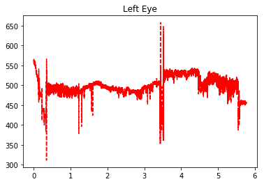
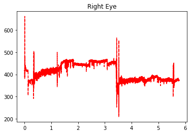

Sleep Stage Detection
MAS.600 (Human 2.0) Final Project
Human 2.0 is a class taught by Professor Hugh Herr in the MIT Media Lab. The goal of the class is to teach students about human augmentation devices and the potential for future (and current) technology. A large part of the class focus is to create a project with potential to augment and better understand the human body. Here I present the work done for my team project--a cheap setup for detecting sleep stages. My team draws inspiration from Professor Robert Stickgold and his Nightcap device for detecting sleep stages realtime with cheap sensors. This replaces the need for expensive and intrusive polysomnograph experiments.
In this writeup, I'll outline the work that I did on this project. I was most interested in creating a very cheap setup to detect sleep stages with low-cost equipment. I believe I have everything in place to do just this.
My teammates (graduate students in Fluid Iterfaces and Conformable Decoders) created the mask shown below, which is stretchy variable resistance sensor fabric sewn with conductive thread onto a sleep mask.

I connected these wires to a voltage divider circuit and Arduino. This allowed me to pick up on minute vibrations of the eye. Eye movements is a good indiciation of sleep stages, so this presents a very cheap way to read signals from the body. This is much more comfortable than using EEG sensors, and it is also much lower cost. Here is the circuit with reads the voltages on two analog inputs of the Arduino shown here.

Obviously the setup in these images does not look very comfortable to sleep with, but that's because this is the prototype to prove potential for the design. Using the rig shown above (which included scotch tape, super glue, etc. because I was working out of my dorm room supplies), I conducted a few experiments to collect data. Here are two graphs depecting eye movements of the left and right eye respectively.


Although the graphs lack detail, the x axis is time in hours. The graphs start at the time that I began trying to sleep. The y axis is the 10 bit analog reading of the Arduino for the particular sensor. I actually used an Arduino Uno for this experiment. This data is as I had hoped. The key takeaway is that the thick regions correspond to the rapid eye memovement (REM) stage. The large fluctuation was clearly detected by the resistive sensor pressed against my eye.
The large spike around 3.5 hours is when I woke up and went the restroom, so that explains the large noise. This data is with no postprocessing and purely the log. Data was recorded at 10 HZ with my software described in a later section.
The conjecture that the thick regions (in the graph) correspond to REM sleep may be hard to grasp. For this reason, I also conducted the esperiment with some ground truth body movement data. To keep up the theme of low-cost, I used a standard webcam facing my bed for this task. Here is an image from the webcam mounted on my dresser, capturing my full bed.